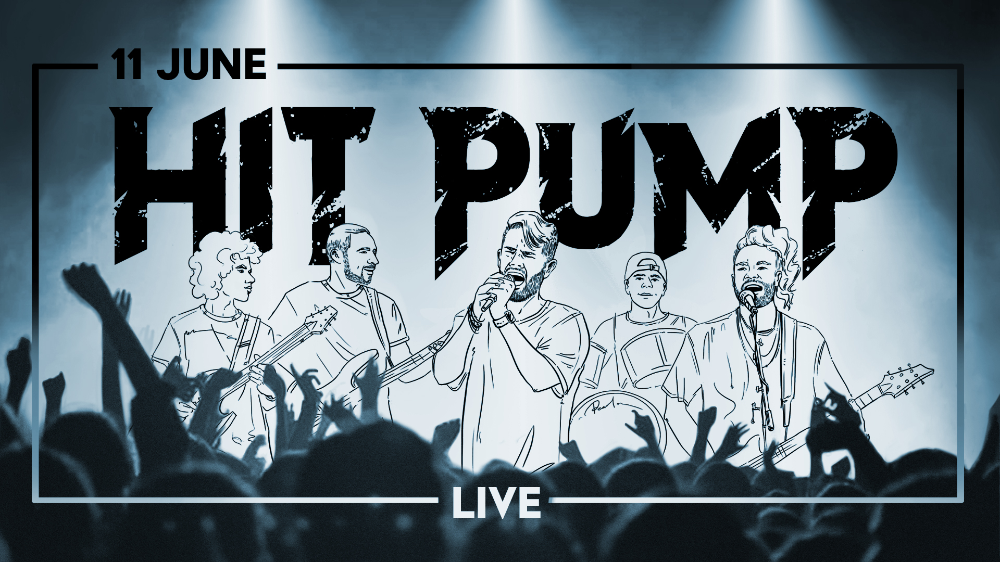
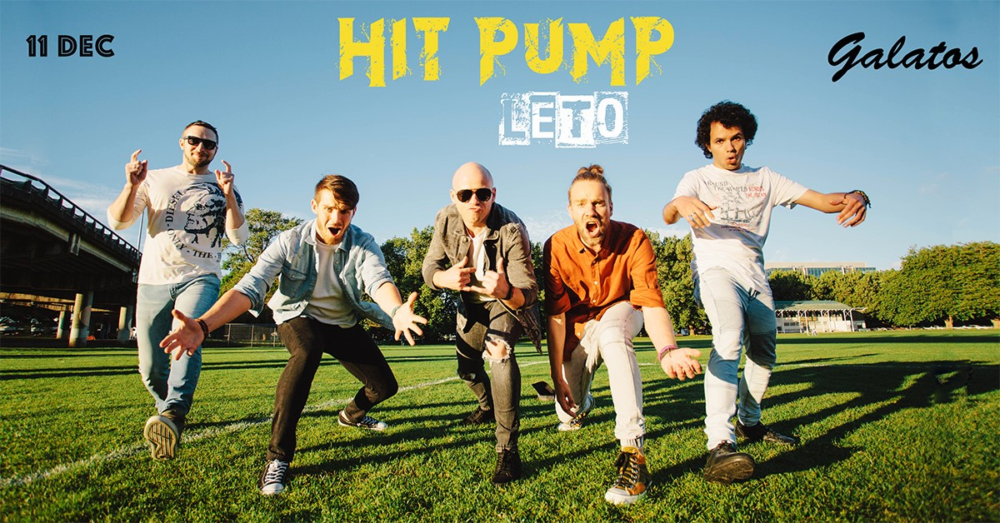

HIT PUMP
Upcoming events
After two sold out performances in a row, the best Russian Rock Band in New Zealand Hit Pump will return in June for a massive show on one of Aotearoa’s most iconic live music venues. “We want to do something that no one has ever done before, and most likely never will ...” It was hard to imagine that one and only Russian-speaking rock band in New Zealand would perform on the same stage as the world-famous artists. Even in their wildest dreams, the guys could not imagine that in 4 years time, they would perform at The Powerstation! A venue with a 1000+ capacity, powerful sound and video capabilities. Hit Pump has built a reputation for head-spinning live shows. This time they are advancing the show production even more to make it truly unforgettable. “Powerstation is an ambitious target. The show production is in full swing. We are working on a production of this scale for the first time but there are no doubts that it will be an epic concert!”
Past events
It’s summertime, New Zealand and we are back on stage! Iconic Auckland venue Galatos will be filled with kilowatts of music. No words can explain how energised and excited we are after more than a year since our last big gig! Expect your favourite hits and the great atmosphere of upcoming New Year Celebrations! Dedicated team of professionals from various fields are here to make this evening unforgettable! There will be lots of drive which will make you flare up with the music.
We are excited to announce “No Way Out” 18 October 2019 - the unique audio and visual experience performed by Hit Pump, the best Russian Rock cover band in New Zealand. This time we will take you back to the days of the legendary Leningrad Rock Club, the first legal rock-club which allowed Soviet rock to surface from underground clubs, private apartments and samizdat tapes to wider audiences. The club was first formed in 1981 under General Secretary of Communist Party of the Soviet Union - Leonid Brezhnev and supervised by the KGB to prevent music critical of the party from reaching the public. We’ll get you singing to Akvarium, Viktor Tsoi (Kino), Alisa; they all rose to popularity on the club’s stage.

Hey people! NZ’s best Russian Rock cover band, Hit Pump, are returning to Auckland stage with bigger, louder and deeper sound program they’ve ever made! Get ready to electrify your soul and break your voice singing all of the favorite hits. Splean, Animal Jazz, Zveri and more more more will sound better than ever. Just like actual bands, Hit Pump will inspire you and get you back to the most nostalgic time of true youth and freedom. Don’t miss out on this rare opportunity to unite with your comrades and favorite songs! And so if it’s not enough, DJ Anton Fedorchenko will close the party with the best dance hits so that your body also feels the heat!

Russian Days
Dear friends! It is now time to get back together and sing, dance and have some great time together with Hit Pump! You are all invited to support our band at Russian Days NZ this Saturday 9th of March at 12:00 inside Western Springs Community Hall. Come along and say hi, there will be lots of food and good music too! Free entry.

Последний концерт уходящего года! Приходи сам и приводи друзей. Обещаем массу эмоций и отличную атмосферу. С нас живой саунд и любимые песни. С вас отличное настроение и желание подпевать!